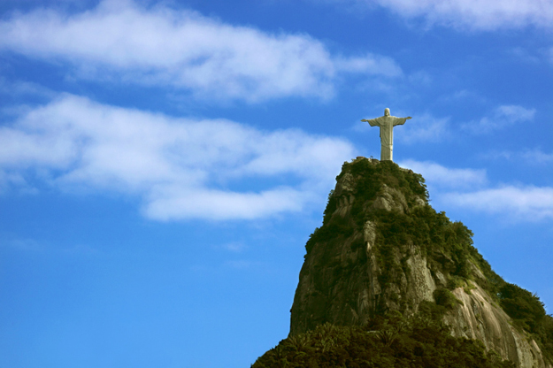

The New 7 Wonders Of The World
Choose a New Wonder
Click one of the buttons to the left.
You can also sort using the drop down list!
The Wonders of the World are crowns of the fancies of travel destinations, holiday vacations which attracts the travelers, tourists and interest of historians alike. Create a various points in time, at specific places, the seven wonders of the World are the materializations of some great dream, wonderful architech and some great labour which being a masterpiece in itself.
Most of the wonder monuments was constructed down the line, magnificient in their own right, and thereby resulting mordern style in a new list of 7 wonders Of the world, but these Seven Wonders of the Ancient World continue to enchant the world. Explore the brief account of each monuments:
The Taj Mahal in India a mausoleum of white marble built by the Mughal emperor Shah Jahan in the loving memory of his favourite wife, Mumtaz Mahal. Pyramids of Giza which was built by the pharaoh Khufu around 2560BC. The construction of the Great Wall China across deserts, grasslands, mountains and plateaus stretching approximately 6,700 km began between the 7th and 8th centuries B.C. Machu Picchu is a one of the popular tourist destinations in Peru in South America. The city of Machu Picchu is located in the Urubamba Province under the district of Machupicchu. Chichen Itza in Mexico is closely associated with the Mayan society and civilization. This is a temple city which was also a significant political and economic seat of the ancient civilizations. The Eiffel Tower was built for the International Exhibition of Paris of 1889 commemorating the centenary of the French Revolution, named after its builder, the French structural engineer Alexandre Gustave Eiffel.

Christ Redeemer
Brazil
Christ the Redeemer, or Cristo Redentor in Portuguese, is a larger-than-life statue of Jesus Christ with his arms outstretched, a symbol of peace that stands almost 40 meters high
Machu Picchu
Peru
Machu Picchu was probably built for the Incan emperor Pachacuti, and the site is sometimes called ‘The Lost City of the Incas.’
Chichen Itza
Mexico
Chichen Itza is an archaeological site built by the Maya civilization of Mexico in 750 to 1200 AD. These ruins of an ancient city center offer insights into the civilization that created it.
The Taj Mahal
India
The Taj Mahal is a symbol of enduring love, built by the Emperor Shah Jahan to memorialize his late wife, Mumtaz Mahal. It is a mausoleum made of white marble, in which the Emperor had his wife entombed, and after his own death, Emperor Shah Jahan was entombed next to his wife.

Petra
Jordan
Petra is a historical and archaeological city in the southern Jordanian governorate of Ma'an, that is famous for its rock-cut architecture and water conduit system. Another name for Petra is the Rose City due to the color of the stone out of which it is carved.

The Great Wall Of China
China
The Great Wall of China is a long man-made wall built using tamped earth, brick, stone, wood, and other materials. This 3,948 mile-long wall was built to keep out invaders and check military intrusions,

The Roman Colosseum
Italy
Built thousands of years ago in c.80 AD, the Roman Colosseum amphitheatre was used mainly for Gladiatorial events where trained Gladiators would fight against each other to their deaths.